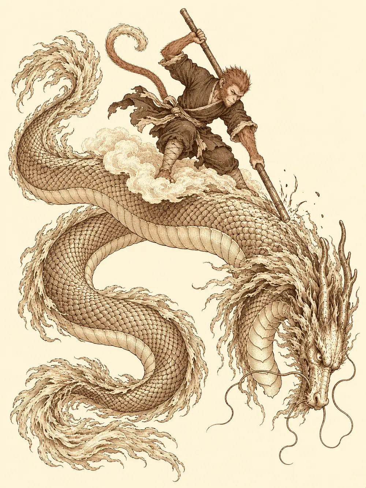

Capítulo 179
El resurgir del guardián
Libro X · Hasta pronto, Kuroto
El cielo llevaba todo el día dorado. No era el oro del atardecer, que se derrama y se va, sino una luz quieta y espesa que cubría la isla de punta a punta desde que, al amanecer, un rugido había hecho temblar las tejas de Sho. En la base, los seis que habían respondido a la llamada se miraban sin saber muy bien por dónde empezar. Banzo venía de preparar un barco; Arwen, de cuidar sus bosques y el árbol que crecía sobre la tumba de Chilia; Sun, Serafina, Guxi y Kazuki, de sus trabajos y sus entrenamientos.
La cúpula que antes protegía el norte cubría ahora la guarida de Otakemaru, y mientras siguiera allí nadie podía dar el último paso. Hablaron de si el dragón querría escucharlos. Hablaron de si tenían derecho a llamarse guardianes cuando aún resolvían tantas cosas a golpes. Banzo recordó lo que les había dicho a las tropas del sur; Guxi mencionó las leyes que estaba redactando para que los yokai tuvieran algo más que buenas palabras. Querían un futuro compartido, pero antes tenían que llegar al palacio, y nadie les había mandado una invitación.
Kazuki miró a la niña. "¿Has notado algo raro desde que vencisteis a los guardianes?".
Arwen se lo pensó con mucha seriedad. Tenía ardores de estómago, dijo. Para demostrarlo se comió un costillar entero, esperó un rato con cara de concentración, y al final soltó una ventosidad con una llama diminuta. Luego se sacó de la nariz un moco que chisporroteaba de ácido. Los demás se apartaron. Pero Kazuki había visto lo que quería ver: el fuego del fénix, el ácido de la tortuga, el frío del dragón azul, la electricidad del tigre. Todo estaba dentro de aquella niña.
Sun y Serafina le tomaron las manos, una cada uno, después de que el mono se las limpiara con la manga y la capitana se las desinfectara con unas gotas de su botella. Los demás se agarraron a sus hombros. Banzo intentó repetir lo que había hecho con Kurobane, elevar su aura todo lo posible. Kazuki puso su magia a disposición de los otros.
Primero sintieron electricidad, un hormigueo que les erizó el pelo. Después un frío que les hizo temblar. Después una quemazón en la piel, como si se les deshiciera sin deshacerse. Y por último fuego, un fuego que no dejaba marca. Los elementos empezaron a girar a su alrededor hasta formar un torbellino que subió hacia el cielo y se los llevó dentro, como por un túnel. En mitad del viaje, Sun oyó una voz conocida dentro de su cabeza.
Más te vale hacer un buen combate. Aún te queda uno más.
Se le erizó el lomo. Miró a todos lados y no vio a nadie.
Abrieron los ojos en un palacio enorme, con dragones pintados en las paredes y un oro que brillaba como si tuviera luz propia. Delante había una puerta muy alta con cuatro figuras talladas: los cuatro guardianes. Banzo saltó por encima de Arwen y le dio una patada a la puerta. Se oyó un crujido, y el goliat se agarró el pie con un aullido. Guxi examinó la puerta y percibió una magia de protección. La niña, en cambio, no necesitó pensarlo. Se tiró una ventosidad de fuego contra el fénix, y el fénix se iluminó. Se cargó el pelo de electricidad frotándose como un gato y tocó el tigre. Le untó un moco de ácido a la tortuga. Y al dragón azul le puso encima las manos frías. Las cuatro figuras brillaron a la vez y las hojas de la puerta se abrieron con un crujido de piedra.
En el centro de la sala, enroscado sobre una alfombra como una serpiente, dormía un dragón de escamas doradas que subían y bajaban con su respiración. Banzo le puso a Sun las dos manos en los hombros y juntó la frente con la suya.
"Has pasado por mucha gente que te señalaba. ¿Estás preparado?".
"Sí, sí, sí".
El goliat lo agarró y lo lanzó al interior de la sala. Sun dio varias volteretas en el aire y cayó en cuclillas, con un puño en el suelo, delante del hocico de la bestia. Golpeó el suelo con el bastón, se acercó y le dio unos golpecitos en la cabeza.
Kogan se desenroscó y se irguió hasta bajar la cabeza a su altura. Sus ojos dorados pesaban como una montaña.
"Así que has regresado con todos. ¿Venís a matarme como a los demás?".
"Eso depende de ti. Yo he intentado ser amable con tus colegas, y todos han intentado arrancarnos la cabeza".
"Arrancar cabezas. Como hacían vuestros antiguos con los yokai. Prometisteis proteger Kuroto, y tú rompiste esa bendición. Hemos pagado por vuestra avaricia: miles de yokai muertos, encarcelados, la pérdida de nuestro rey y después vuestras mentiras".
"Hace miles de años de eso. La gente que lo hizo mal ya está bajo tierra. La gente de ahora puede saber la verdad y cambiar el rumbo". Sun señaló al sur con el bastón. "¿Sabes quién ha perdido el rumbo y no lo va a cambiar? Tu jefe. Otakemaru está sacrificando yokai y convirtiéndolos en demonios. ¿Eso te parece bien?".
El dragón se volvió hacia Banzo, que había abierto los brazos.
"Aquí nos tienes. Durante años hemos defendido esta tierra como mejor hemos sabido, y lo vamos a seguir haciendo. Haremos de Kuroto un país donde yokai y humanos vivan en las mismas condiciones. ¿Quieres pertenecer a ese reino? Adelante. Si quieres sucumbir en la sombra, tampoco tenemos ningún problema en volver a pisarte".
Kogan los miró a todos, uno por uno, también a Arwen.
"Bien. Si es lo que queréis, demostradme que podéis hacerlo".
De su boca salió un aliento de oro líquido. Lo que no esquivaron los quemó como metal fundido. Sun llamó a su nube y saltó encima. El dragón lanzó estallidos de luz que reventaban contra el suelo, y Kazuki deshizo uno de sus conjuros antes de que terminara de formarse. Arwen levantó un muro de piedra que cubrió a Serafina y a Guxi del siguiente estallido, y el artífice aprovechó el respiro para curar a su mujer, que había quedado malherida. Kazuki tocó la mano de Banzo al pasar, y el goliat sintió que el tiempo se le estiraba. Corrió en semicírculo arrastrando el hacha por el suelo entre chispas, saltó, se agarró a las escamas y trepó por el cuerpo de la bestia. El primer hachazo rebotó en el oro. El tercero entró, y lo dejó clavado como un ancla para no salir despedido.
Sun se lanzó a la carrera desde la nube, cruzó el cuerpo del dragón de un lado a otro golpeando a su paso, y en el segundo golpe lo alcanzó en un punto que hizo temblar a la bestia entera. Kogan se quedó con la cabeza colgando, aturdido. Kazuki aprovechó para abrir el cielo de la sala y dejar caer una lluvia de meteoros; había procurado desviarlos de Banzo, pero el goliat seguía agarrado al dragón y una parte le cayó encima de todos modos. Arwen se subió a lomos del mono y fue curando a quien pasaba cerca. Sun intentó atarle el hocico con una cuerda y amarrarla a una columna; el dragón abrió la boca y la cuerda saltó en pedazos.
El siguiente aliento los alcanzó a todos. A Banzo le arrancó la velocidad del cuerpo y lo dejó colgado de las escamas sin poder moverse. Kazuki cayó casi muerto, y Serafina llegó hasta él a tiempo de meterle en la boca una de las pociones de Arwen. Una explosión de luz dejó ciego al goliat. Banzo se soltó, buscó a Sun por la voz, lo encontró y le puso una poción en la mano. Luego se volvió hacia el dragón, se tapó los ojos con un brazo y abrió el otro de par en par.
"Aguanta", le dijo a Sun.
Kogan cayó sobre él con todo lo que tenía, y Banzo lo recibió. Serafina se quedó quieta, esperando el momento de su alumno. Sun miró a Arwen y la llamó. Los tres golpearon a la vez, la capitana, el mono y la niña, y de los tres golpes salió un mismo destello.
El dragón se quedó mirando hacia arriba y cayó, enroscándose sobre sí mismo, con un estruendo que hizo temblar el suelo. Banzo, con las piernas temblando, se desplomó de espaldas.
La cabeza de Kogan quedó junto a ellos, con un ojo enorme que los miraba de lado. Se le dibujó una sonrisa.
"Veo que el nuevo Kuroto tendrá una nueva guardiana", dijo, mirando a Arwen. Luego miró a Sun. "Y a su protector. Espero que protejáis la isla como es debido. Una nueva era, nuevos guardianes".
Se fue deshaciendo en hebras de luz que llenaron la sala de un blanco puro que no hacía daño. Delante de Sun, las luces se arremolinaron hasta formar un bastón largo y sencillo, casi sin adornos. El mono lo tomó, lo hizo girar y supo sin que nadie se lo dijera que con él alcanzaría más lejos que con ningún otro, y que si lo clavaba en el suelo todo lo que tuviera alrededor se vendría abajo. Otras luces cayeron sobre el arco de Kazuki, que creció entre sus manos, se llenó de hojas y vetas rojas y recuperó una forma que el noble había perdido durante la guerra. Por eso había venido a Kuroto, dijo. No solo por el shogunato.
No les dio tiempo a celebrarlo. Una niebla blanca empezó a entorpecer la vista, y una nube que no era la de Sun lo agarró por la solapa y se lo llevó hacia arriba.
Lo dejó caer sobre otra nube. Allí estaba Shen, con la armadura entera, la lanza en la mano y el tercer ojo abierto en la frente otra vez. Detrás de él había un ejército celestial, miles de soldados y estatuas inmensas. Shen los señaló. Los soldados se lanzaron contra el mono, y del cuerpo de Sun brotó un aura dorada que le volvió el pelaje de oro e hizo brillar su armadura. Los soldados se estrellaron contra aquella luz y cayeron todos al instante.
Shen sonreía. "Vayamos a tu monte. Tenemos algo que acabar".
Lo llevó a un monte lleno de tumbas.

"Este no es mi monte".
"Tú todavía no has estado aquí. Ellos sí. Todos fueron intentos de un mono pretencioso, codicioso, que a diferencia de ti no tenía compañeros. No tenía amigos. Parece que tú has encontrado algo diferente".
"Yo solo quiero pelear contra el Rey Mono. ¿Lo encuentro aquí o tengo que buscar en otro lado?".
"De rey me queda ya poco. Pero si quieres al monje protector de la guardiana de Kuroto, aquí me tienes".
Shen saltó y descargó la lanza de arriba abajo. Sun la recibió con el bastón en diagonal y la dejó resbalar hasta el suelo; la lanza se partió en dos. Shen echó mano a la espada. El bastón del mono le alcanzó la mandíbula y el celestial escupió sangre, la miró y siguió sonriendo.
"Esto es exactamente lo que quería".
Se cruzaron golpes de espada y de bastón, saltos, una patada en el mentón, un tajo desde las nubes que Sun detuvo con el bastón por encima de la cabeza mientras sus pies se hundían en el suelo. El mono clavó el bastón y Shen cayó de rodillas. Acabaron a puñetazos, cara a cara, hasta que un golpe de Sun lo tumbó de espaldas.
"Has ganado", dijo Shen desde el suelo. "Tienes el derecho absoluto. Te espera un sitio en el palacio, junto a los demás dioses. Eres una deidad. ¿Quieres la inmortalidad? ¿Quieres el trono que tanto ansiabas al principio de tu camino?".
Sun se puso en pie y lo miró desde arriba.
"Te dije la primera vez que no era el mono que buscabas. Así que trágate esa soberbia, sube a donde tengas que subir y diles a los dioses que aquí abajo no se les ha perdido nada. Mi sitio está aquí con mis compañeros. Al parecer, ahora tengo que proteger a la pequeña. Si necesitáis un mono que ocupe un trono, buscaos otro".
Le tendió la mano. Shen la tomó y tiró de él para acercarle la cara.
"La próxima vez que empieces una historia, confía mucho más en ti mismo. No dependas solo de la confianza de tus compañeros. Confía en lo que hay aquí dentro". Le tocó el pecho.
Se fue deshaciendo en partículas blancas. En el último instante chasqueó los dedos, y sobre la cabeza de Sun apareció una corona de plumas de fénix. El pelaje dorado empezó a apagarse hasta volver a su color.
"Has tomado una decisión. Espero que sea la correcta".
Un torbellino, y Sun estaba en la base. Banzo se le echó encima antes de que pudiera respirar, Arwen se convirtió en oso para levantarlo en volandas y los pequeños mujina chillaban de emoción. Sun les contó que le había partido la cara a aquel loco que no paraba de inventarse historias sobre un mono que limpiaba establos. Serafina no dijo nada; sonreía de oreja a oreja, porque por fin había entendido lo que el monje Tang le había explicado una vez, que a su alumno solo le faltaba confiar en sí mismo. Banzo le dio un golpe en el pecho.
"Estoy orgulloso de compartir una batalla más con un hermano".
Salieron a la calle para celebrarlo. Al sur, a muchos kilómetros, la barrera que protegía la guarida de Otakemaru se agrietó como un cristal y se rompió en pedazos. La cúpula volvió a cubrir el norte de Kuroto, de las montañas hacia arriba. Arwen levantó la mano.
"Por la paz".
Al volver a Sho, Tiari salió a recibirlos. Celebró que hubieran trabajado en equipo; Banzo insistió en que eran una familia. Les dejó una bolsa de oro para que se equiparan antes de ir contra Otakemaru y les contó que ahora formaba parte del consejo del shogunato. También mencionó, de pasada, que había resuelto a un precio muy alto el asunto de la pesca, y Banzo le explicó a Sun que se refería a aquellos tritones con cara de pez. En la taberna, Tiari se colgó del brazo del mono para provocar a Serafina, que le soltó un calambre. Véspera llegó y los clientes se encogieron de miedo. Le dio a Guxi su escudo para que lo convirtiera en un muro, y Arwen le pidió algo para moverse más rápido con su mochila.
Sun salió un momento al callejón. Buscó dentro de sí la energía de su maestro, y la voz de Tang le respondió desde muy hondo. Le pidió perdón por todo lo que le había hecho pasar y le dijo que ahora sus amigos eran su familia. Tang le contestó que haber rechazado el poder divino para protegerlos demostraba su grandeza, lo llamó su mejor alumno y le pidió que fuera maestro. Podía disfrutar de la vida mortal, le dijo, siempre que comprendiera las consecuencias. Luego habló otra voz: Shen, que lo llamó por su nombre completo y verdadero Rey Mono, y le aseguró que el siguiente asalto llegaría cuando terminara su camino mortal. Sun volvió a la taberna con el corazón ligero, se presentó a gritos, bebió con las manos, los pies y la cola, y coqueteó en público con Serafina hasta que ella le dio un golpe en la cabeza.
En el taller, R3 rebuscó entre las piezas hasta encontrar un tubo con los planos de la armadura de Archi y de un prototipo pensado para que el autómata combatiera a su lado. Guxi decidió que aquello tenía prioridad. Subió al tejado y clavó un enorme pararrayos mientras la tormenta descargaba sobre ellos.
Banzo se llevó aparte a Tiari. Ella le explicó que la guerra de Brunami estaba consumiendo los recursos de cierto gobernante y que ella había orientado sus negocios para que dejara de presionar a Kuroto. Brindaron por Calista. El goliat le dio la espada del shogun, y la ladrona, tocada por los recuerdos del antiguo gobernante y de la tritón, aceptó custodiarla sin reclamar el título. Banzo le confesó lo que haría cuando acabara la guerra: buscar a Gelbreak y cumplir la promesa de no dejarlo caer en las sombras. Tenía un barco, pero no un destino. Tiari le advirtió que seguir a un dragón no garantizaba nada y prometió mover sus contactos. Como precio, le pidió en voz baja que le diera un puñetazo a Gelbreak de su parte.
Días después, Channi recogía monedas de las bolsas de los clientes dormidos, convencida de que se las guardaba para que no se perdieran. Kazuki la llamó a su mesa. Ella le dijo que olía a flores, como un príncipe de su tierra, y le preguntó por Tezca, que hacía días que no dormía en la base. Así llamaba a Kurobane: le recordaba a un espejo de obsidiana. Kazuki no sabía dónde estaba, pero le prometió buscarlo. Otro día la ayudó a entrar en la habitación del ninja y a sacar del armario una capa que olía a él. Channi se envolvió en ella y lloró en silencio. Temía que Kurobane no quisiera que lo encontraran, y él le dijo que eso era asunto del ninja, pero que intentaría convencerlo de volver a casa.
Al campamento del sur llegó la noticia de que la cúpula volvía a proteger las tierras del shogunato. Los generales vieron por fin una oportunidad contra Otakemaru, aunque entre los soldados seguían el miedo y la incertidumbre. Hayate recibió la misiva en el templo de su hermano y se despidió de él. Llevaba sus mejores ropas, sus mejores flechas y la Pluma Ancestral, el símbolo de su ciudad, que su hermano le había cedido. Ikari celebró con los suyos una fiesta en las cavernas bajo su taberna cerrada; bebió el brebaje que le ofreció Mosto, lo abrazó y le entregó unos pergaminos con un plan de huida y su última voluntad por si no regresaba. Después bailó hasta caer en trance.
Junto a un lago, bajo la luna, Palayer bailó para su diosa, y al volver repitió en voz baja unas palabras que creía suyas: quedaba libre del juramento hecho por amor y debía cumplirlo ahora por la vida que crecía dentro de ella. Se acostó junto a Banzo sonriendo. El goliat soñó esa noche con Calista y Gelbreak; jugaron a hacer el mayor caos posible, se persiguieron por el barro, y al final él les ató las manos con el fular de la tritón y los declaró marido y mujer. Despertó abrazado a Palayer. De las sábanas salió una pequeña criatura de ocho patas sin que nadie la viera.
En un banco de Sho, Sirth miraba a la gente con gratitud. Dentro de él seguía el avatar del dios del asesinato, que le exigía una masacre. Morir no serviría, porque lo traería de vuelta. Su esperanza era una espada de sangre que estaba ahora en manos de un mortal de Brunami, al otro lado del océano. Jin, de regreso en Ukio, bebió con Kitaro y pensó en ir a ver a Shizuka y en buscar a su viejo amigo. Véspera sobrevolaba los alrededores buscando desertores, se posó en un peñasco y lloró lágrimas de fuego por el rey al que no había sabido detener.
En el puerto, Serafina apareció vestida de blanco y con velo. Guxi transformó sus ropas en un traje y subieron juntos al Rompeolas, su único testigo. Él besó el anillo y le prometió felicidad y compañía hasta el final de sus días. Ella le dijo que, si sobrevivían, todo sería todavía mejor.
Al día siguiente, Sun esperaba junto al portal con una botella cara y una caja de madera que había comprobado con nervios, nada más regresar, que seguía intacta. Serafina llegó sola. Brindaron por el camino recorrido; ella le agradeció que la hubiera ayudado a encontrar el equilibrio entre la calma y la tempestad. Cuando él por fin se atrevió a decir que necesitaba contarle algo antes de que se casara, ella le explicó que ya se había unido a Guxi, que la ceremonia quedaba para después de la batalla, y que no quería romperle el corazón. Sun escondió la caja y le dio la botella como regalo de boda. Ella lo abrazó y le dijo que lo quería, pero no como él deseaba. El mono negó haber pretendido otra cosa, aunque se le quebró la voz. Serafina cruzó el portal. Él se quedó mirando la caja, que tenía grabado el nombre de ella, y no la abrió.